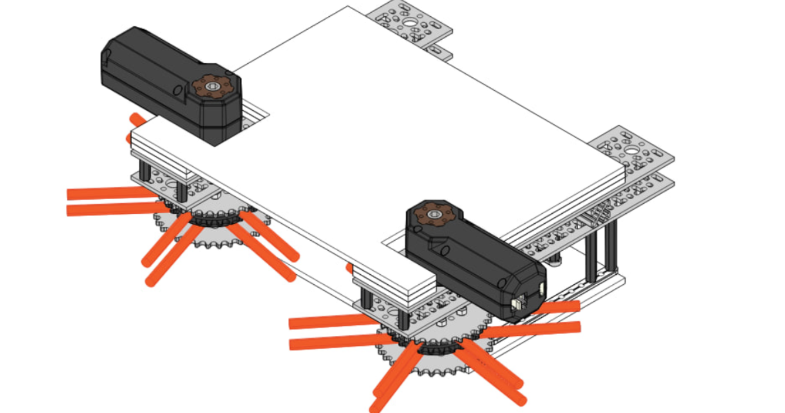

Активный и пассивный intake в FTC
Intake — это механизм для захвата и перемещения игровых элементов. В FTC роботы используют два типа intake: активный и пассивный. Оба варианта приводятся в движение моторами, но отличаются принципом работы и эффективностью в разных ситуациях.
Активный intake

Активный intake обеспечивает быстрый захват элементов благодаря вращающимся частям, которые затягивают объекты внутрь робота. Наиболее распространены два типа активных intake: с трубочками и с колесами. Примеры колес для интейка: goBILDA Gecko Wheels (48/72/96 mm), REV DUO Compliant/Grip Wheels.
Примеры звезд и лепесковых колес для интейка: AndyMark Entrapption/Compliant Star, goBILDA Boot Wheel (48/72/96 mm), REV DUO Flap Wheels (входит в REV FTC Starter Kit).
Принцип работы:
В интейке с трубочками или звездочками гибкие или жесткие трубочки вращаются на валу, создавая силу трения, которая затягивает элементы.
В интейке с колесами небольшие колеса, установленные на осях, вращаются и захватывают элементы при контакте.
Преимущества и особенности активного intake:
- Высокая скорость захвата, что позволяет собирать элементы на ходу.
- Гибкость конструкции: трубочки и колеса можно настроить так, чтобы они захватывали элементы под разными углами.
- Эффективность при работе с элементами разных форм и размеров.
- Возможность одновременного захвата нескольких элементов.
- Требуется точная настройка скорости вращения и расстояния между захватывающими частями для достижения максимальной эффективности.
- Простота в управлении.
Пассивный intake
Пассивный intake используется для надежного захвата и удержания игровых элементов. Он состоит из двух подвижных частей, которые прижимаются к элементу с обеих сторон. Захват активируется мотором, после чего элемент удерживается механически. Существуют команды, которым удалось автоматизировать клешню с помощью камер, но это очень тяжело.
Преимущества:
- Высокая надежность удержания — элементы фиксируются жестко, что особенно важно при движении робота по неровному полю или при столкновениях.
- Простота конструкции.
- Меньшее энергопотребление по сравнению с активным intake.
- Подходит для задач, где необходимо удерживать крупные или нестандартные элементы.
Сравнение активного и пассивного intake
| Характеристика | Активный intake | Пассивный intake |
|---|---|---|
| Скорость захвата | Высокая | Средняя (зависит от драйвера) |
| Гибкость применения | Подходит для захвата на ходу | Требует точного подъезда к элементу |
| Сложность конструкции | Средняя | Простая |
| Надежность удержания | Средняя (требуется активное удержание) | Высокая (механическое удержание) |
| Энергопотребление | Высокое | Низкое |
| Управление | Простое | Простое |
Заключение
Активные intake обеспечивают скорость и гибкость захвата, что делает их отличным выбором для закидывания на high basket и игр, где важно быстро собирать большое количество элементов. Пассивные intake подходят для задач, где требуется надежное удержание, например для вешания спесименов.